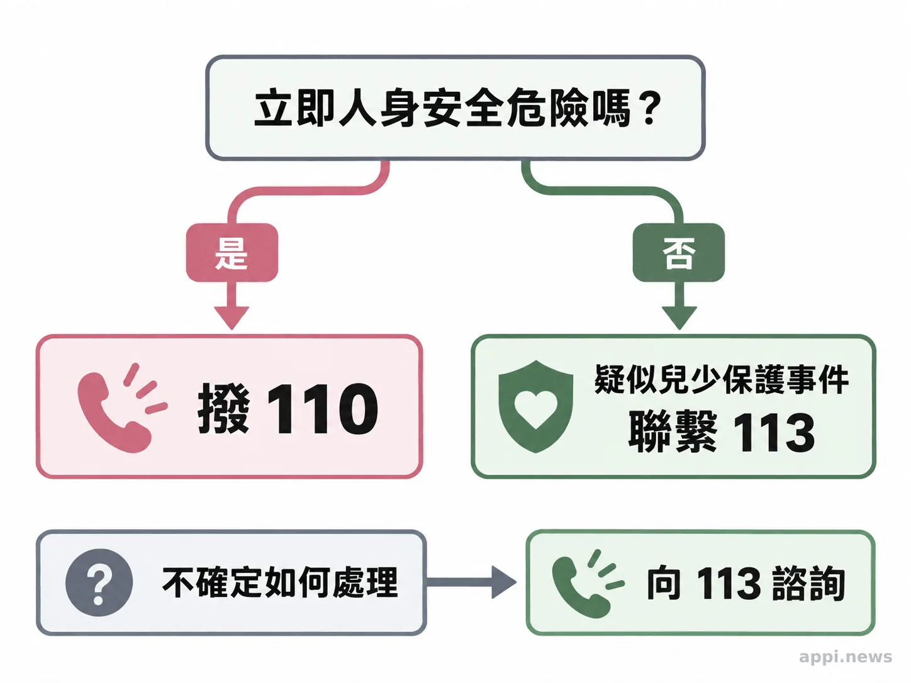
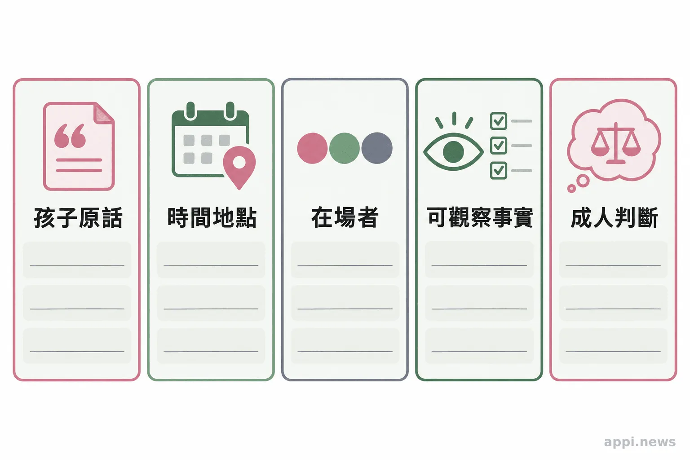

孩子說出受傷經驗時，大人如何陪伴與求助？
孩子說出疑似受虐或不當對待時，先聽、確認安全、避免追問；家長、老師與志工可記錄原話，依情況聯繫113，立即危險時撥110。
「有件事我想告訴你。」孩子在放學路上、教室角落，或家中某個平常的時刻，可能用自己的方式試探著開口。此時，大人先停下手邊的事，讓孩子知道有人在聽。家長、教師與志工不必立刻判斷事情是否屬實，先穩住情緒、確認孩子眼前是否安全，再尋找適當的專業協助。
兒童與少年可能只說出片段，或分幾次表達，使用的詞彙也未必和成人相同。這些情形值得認真看待。陪伴孩子不等於替任何人定罪；保護與釐清事件，分別需要不同權責。
孩子開口時，先讓他知道有人願意聽
先保持平穩，謝謝孩子願意告訴你，並確認他現在是否安全。讓孩子依自己的步調說，不責怪、不質疑，也不急著判定事件。
可以回應：「謝謝你告訴我。」「這不是你的錯，我會陪你找可以幫忙的人。」孩子可能說一會兒就停下來，大人不必催促。若自己感到震驚或生氣，先調整聲音和表情，避免孩子反過來安慰大人或擔心惹出麻煩。
若有需要，只問眼前安全，例如「你現在安全嗎？」或「你希望我找誰陪你？」這是為了判斷是否需要立即協助，不是請孩子重述經過。
少問案情細節，也別答應絕對保密
避免追問細節、暗示答案或反覆確認同一件事，也不要承諾絕不告訴任何人。孩子若要求保密，可以依他的年齡說明，會謹慎處理，只找能協助保護他的人。
像「是不是某某人在房間裡打你？」已把人物和情節放進問題；「你確定嗎，再想清楚一點」可能讓孩子覺得自己的話不被相信。若孩子不想再說，就先停下來。家長、老師與志工負責聆聽、留意安全並轉介，不查明案情，也不讓孩子補足成人猜想的細節。
孩子可能擔心大人告訴別人後會發生什麼事。可以說：「我會小心處理，找能幫助你安全的人一起想辦法。」若疑似行為人是家人或仍與孩子同住，避免質問、對質或自行通知對方，先將安全疑慮告知專業單位。
支持性聆聽與專業訪談，目的不同
司法或專業評估訪談由受訓人員依程序進行；身邊大人的任務是支持孩子、確認眼前安全並適時轉介。帶有暗示的重複問題可能影響孩子的回答，但研究情境有限，不能說一次重問就必然污染證詞。
一項分析 71 份訪談紀錄的研究，對象是 3 至 6 歲疑似受虐兒童。部分重複問題帶有隱含假設，作者建議評估訪談避免暗示性提問。研究聚焦特定年齡與專業情境，不能直接套用到所有日常支持，也不能推論單一回應能決定司法結果或避免所有心理傷害。
衛生福利部兒少保護教材提醒：「請直接記下受訪對象的原始說法，詳細的紀錄是重要的。」這段文字談的是專業評估紀錄；一般陪伴者可記下原話，後續評估與訪談則交由受訓人員。
衛生福利部《重大兒童及少年虐待案件教材彙編》提醒：「請直接記下受訪對象的原始說法，詳細的紀錄是重要的。」陪伴者記錄原話，有助通報交接時區分記憶與推測。

記下原話，依情況聯繫113或110
記下孩子的原話、時間、地點、在場者與可觀察到的情況，並把成人推測分開標示。疑似兒少保護事件可聯繫113；若有立即人身安全危險，先撥110。
記錄不必寫成調查報告，也不要逼孩子重說。分清孩子原話與親眼所見，只交給通報窗口或適當的專業人員，不放進私人群組或社群平台。衛福部說明，113全年無休，受理兒少保護通報與求助諮詢；通報時可提供人、事、時、地、物。法定責任通報人依規定及機構流程辦理。
一般民眾與志工不必先查明真相，也不負責做保護決策。若不確定該提供哪些資訊，可向113說明目前情況；遇到立即危險，先聯繫110。

平時先確認通報窗口，孩子開口時才有下一步
先把113存進手機，並確認學校、社區或服務機構的通報窗口、緊急聯絡方式與保密流程。知道該找誰，遇到情況時就能把心力放在孩子和安全安排上。
若孩子暫時不願再說，不要把沉默當成否認，也不必要求他證明什麼。告訴孩子之後仍能找你談，並依情況聯繫113或機構窗口。若孩子仍可能接觸疑似行為人，向專業人員說明並請其協助評估安全。
今天先把113存進手機，再確認學校、社區或志工機構的兒少保護通報窗口。孩子需要有人聽見，大人也要知道下一步找誰。
- 先聽孩子說，感謝他願意開口，並確認當下安全。
- 避免追問、暗示答案、反覆確認或承諾絕對保密。
- 記下原話並分開記錄觀察與推測；疑似事件聯繫113，立即危險撥110。
常見問題
Q1: 孩子說了一點就不願再講，怎麼辦？
先停下追問，讓孩子知道你願意陪伴，並確認眼前是否安全。依疑似情況聯繫113或機構通報窗口，不必等孩子說完整才求助。
Q2: 孩子要求保密，可以答應嗎？
不要承諾絕對保密。可以告訴孩子，你會謹慎處理，只找能協助保護他的人一起想辦法。
Q3: 我不確定孩子說的是否屬實，也能聯繫113嗎？
可以就疑似情況向113諮詢或通報。是否需要進一步調查及如何保護，由權責專業人員評估。
Q4: 疑似行為人是家人，應該先當面詢問嗎？
先避免自行質問或安排對質，尤其孩子仍與對方同處時。向113說明孩子目前位置與安全疑慮；有立即危險時撥110。
Q5: 老師或志工要把孩子的說法貼到同事群組嗎？
不要轉傳私人群組或公開討論。只依法律及機構流程交給有權責的人員，交接時保護孩子身分，並區分原話、觀察與推測。
作者：台灣微光希望關懷協會理事長 林秀霞
參考文獻
- 衛生福利部保護服務司（更新時間：2024）。113保護專線介紹。
- 衛生福利部（2019，2021更新）。發現兒童少年有疑似遭受虐待或不當對待，應該怎麼協助他們？可以上網爆料嗎？。
- Macleod E, et al. (2021; eCollection 2022). The use and impact of repeated questions in diagnostic child abuse assessment interviews. Psychiatry, Psychology and Law, 29(3), 364–380. https://pubmed.ncbi.nlm.nih.gov/35756704/
- 衛生福利部（未註明年份）。重大兒童及少年虐待案件教材彙編。
本文同步刊於 appi.news。